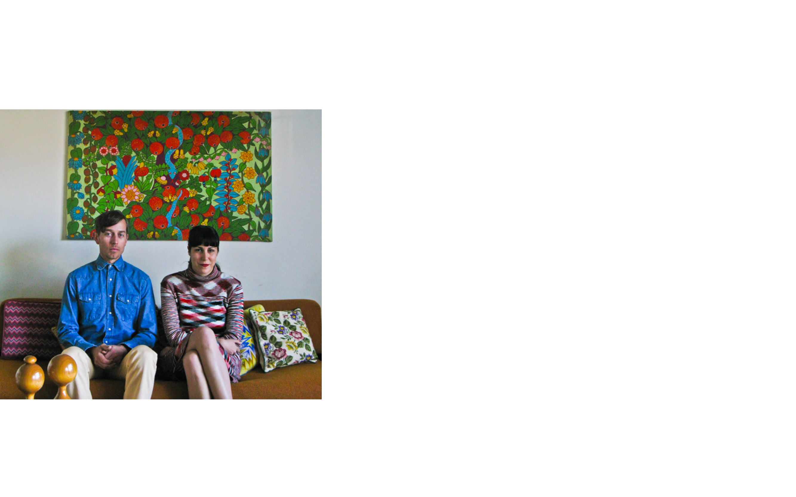

Julia Galdo
JUCO Photo
JUCO represents the collaborative work of Julia Galdo and Cody Cloud. They first met at The San Francisco Art Institute in 2002 where Cody received his MFA in photography and Julia her BFA. Their first projects together were actually class assignments. Team JUCO is based in Los Angeles, CA. They enjoy plants (on many levels), thrift stores (deeply) and the beach (when the time is right).
Cody Cloud
Noemi Schipfer
NONOTAK studio

JNONOTAK studio is the collaboration between the illustrator Noemi Schipfer and the architect musician Takami Nakamoto. Commissioned by the Architect Bigoni-Mortemard to create a mural in the lobby of a public housing building in Paris, NONOTAK was created in late 2011. In early 2013, they start to work on light and sound installations, creating an ethereal, immersive and dreamlike environment meant to envelope the viewer, capitalizing on Takami Nakamoto’s approach of space and sound, and Noemi Schipfer’s experience in kinetic visual.
They presented their first audiovisual installation at the Mapping Festival in may 2013. In summer 2013, NONOTAK come up with a performance, LATE SPECULATION, where they are the creators and contents of the project. NONOTAK have been commissioned by the Mapping Festival ( GENEVA ), EM15 ELEKTRA / MUTEK ( MONTREAL ), la Nuit Blanche ( PARIS ), Roppongi Art night ( TOKYO ), Axcess Art Gallery ( NEW YORK ), Stereolux ( NANTES ), Playgrounds Festival ( TILBURG ), Mirage Festival ( LYON ), Vision’R, Insanitus Festival ( LITHUANIA ), FUZ Festival ( PARIS ), Lunchmeat Festival (PRAHA ), KIKK Festival ( BELGIUM ), Nokia by Lumia ( ISTANBUL ). Their work have been exhibited at institutions and galleries including Tokyo Grant Hyatt Hotel, l’Opéra de Lyon, Batiment d’Art Contemporain de Genève, Theater de NWE Vorst, La Fabrique, Pavillon Carré de Baudouin, Le Générateur.
Cody Cloud